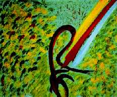

| Art Suprême |
(original en au lacien) |
|  |
|
Par Maître Suprême Ching Hai peinture à l'huile 50.5 x 60.5 cm Centre Satin, Hong Kong, juillet 1993 |
"Tel est l'homme en ce monde, entouré de dangers, de misères, accablé de souffrances au point de verser des larmes et du sang. Un jour, la lumière du royaume jaillit d'en haut et il retrouve soudain la force de vivre. Un peu hésitant et inquiet au début, il finit par s'éveiller pour s'unir avec tous les êtres après en avoir clairement pris conscience et retrouvé peu à peu la confiance en Soi." Du point de vue des couleurs, l'ensemble du tableau "Etre sauvé" ne comporte que des teintes fortement contrastées : rouge et vert, violet et jaune. Quant à l'image, c'est celle d'une rocaille à l'aspect lourd qui envahit presque la surface de la toile. Le peintre a eu un coup de pinceau vigoureux et définitif.
Le fond, à droite de la toile est de couleur vert pâle, vert foncé, jaune pâle et de tâches rouges comme des larmes de sang. Les couleurs, l'image et les traits provoquent chez les contemplateurs, une impression d'extrême souffrance. Le côté le plus remarquable du tableau "Etre sauvé" est le symbolisme du sursaut invincible d'un homme représenté ici par une énorme corde de couleur marron et violet foncé à peine dénoué, se libérant brusquement, les deux bras largement ouverts pour accueillir les trois rayons de lumière éblouissants venus d'en haut et s'unit à l'omnipotente de l'immense univers.
Le Maître Ching Hai a utilisé les couleurs pour expliquer aux amateurs de peinture les malheurs de l'homme ici-bas, les souffrances d'une âme emprisonnée, l'immense amour du Créateur, l'énergie incommensurable de la Création, l'omniprésence de la force du monde invisible. L'image d'une corde fortement nouée qui se délie brusquement, pour recevoir la lumière de la confiance en soi, de la force intérieure, permettant de reconnaître clairement l'Amour éternel de Dieu qui est partout, notamment là où l'humanité a le plus de difficultés et de souffrances. Ecoutons les douces paroles profondes, pleines d'amour d'un être qui a voué Sa vie entière pour devenir une lumière éclairant le chemin de tous ceux qui veulent retourner vers la Vérité. Toute notre gratitude, à Vous, Maître Ching Hai.